01.30.2009 14:53
Arctic incident workshop report released
I made several blog posts during March about the St. Lawrence Island subgroup
01.29.2009 16:36
Streamlining segy sample reading - power of open source
199d198 < samples = [] 202,206c201,204 < for i in range(self.trace_samples): < start = base+i*self.sample_size < end = start+self.sample_size < samples.append( struct.unpack(code,self.data[start:end])[0] ) < self.samples = samples # Cache it --- > end = base + self.trace_samples * self.sample_size > fmt = '>%d%s' % (self.trace_samples, code[1:]) > samples = list(struct.unpack(fmt, self.data[base:end])) > self.samples = samples 348c346 < self.extended_text_hdrs.append = decode_text(data[file_pos:file_pos+3200]) --- > self.extended_text_hdrs.append(decode_text(data[file_pos:file_pos+3200]))I didn't know that you could pass a number of elements to a struct code to read that many elements. That saves trace reading a lot of string passing. In the case of my test file, this replaces 22K loops on the python side with 1.
% opendiff simplesegy-0.3/simplesegy/segy.py segy.py
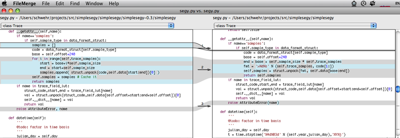
01.28.2009 09:57
configure and included external packages
Please give me an easy way to not use external packages that you wrap into your distribution!
libkml includes a thirdparty diectory that includes boost and uriparse. It then stuffs some extra shared libraries and headers into its install. This will likely cause all kinds of bad things if I were to let it go into fink. Give me some options to specify these libraries and if I don't use them, then you can fall back to your thirdparty libs.
Submitted an issue for this... Issue 50: configure does not have options use external boost and uriparse
01.28.2009 07:20
Converting python 2.x to 3
--- segy.py (original)
+++ segy.py (refactored)
@@ -210,7 +210,7 @@
val = struct.unpack(struct_code,self.data[self.offset+start:end+self.offset])[0]
self.__dict__[name] = val
return val
- raise AttributeError, name
+ raise AttributeError(name)
def datetime(self):
'''
@@ -261,7 +261,7 @@
def __iter__(self):
return self
- def next(self):
+ def __next__(self):
if self.cur_pos > self.size-1:
raise StopIteration
trace = Trace(self.data,self.sample_type,self.cur_pos)
This is what open source is all about. Vesa sent me a patch file to fix some bugs the day
after I released simplesegy to pypi. Rock on!
Some readings on converting code from 2 to 3:
Porting to Python 3: Do's and Don'ts by Armin Ronacher
What's new in Python 3.0 - What's new in Python 2.6
01.27.2009 21:29
Google Code Search
Google Code Search: "Kurt Schwehr" lang:makefile
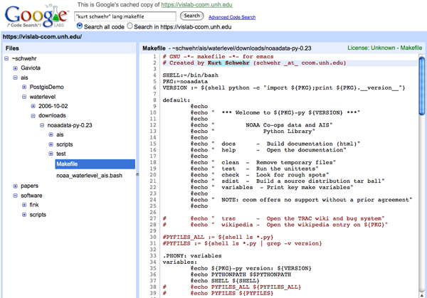
An interesting discovery I found was Trey Smith reusing some of my oldXDR code:
* $Revision: 1.4 $ $Author: trey $ $Date: 2004/04/06 15:06:08 $ * * PROJECT: Distributed Robotic Agents * DESCRIPTION: * COMMENTS: large parts of this code are taken from a flex spec * written by Kurt Schwehr at Ames 7/96
01.27.2009 16:14
Japan's new Shirase Ice Breaker

AGB-5003 Shirase (II) [GlocalSecurity.org]
.. The second-generation Shirase (17AGB / H17 Forecast) was launched in April 2008. A launching ceremony took place Wednesday April 16, 2008 in Maizuru, Kyoto Prefecture, for the Shirase, Japan's newest icebreaker for Antarctic expeditions. ... The new Shirase (5003) was built at the Universal Shipbuilding yard in Maizuru on the Japan Sea coast. The New Shirase was scheduled to be ready in May 2009. Due to budgetary delays Shirase (5003) will not go on its first voyage until November 2009 after interior work on it is completed in May 2009. ... Taking the name of its predecessor, the Shirase is Japan's fourth icebreaker. The new Shirase was built at a cost of 37.6 billion [yen]. The 12,500-ton ship, which is 138 meters long and 28 meters wide, is slightly larger than its predecessor and has top-level ice-breaking capabilities. It can move at 3 knots, breaking up ice 1.5 meters thick. The new ship uses seawater to clear the snow on the ice, allowing it to move smoothly for better fuel-efficiency, and has a double-walled fuel tank to prevent leaks.Image of AGB-5003 from the Wikimedia Commons.

There are also two pictures here: thomasphoto blog [not in English]
01.27.2009 13:08
Open Notebook Science
Open Notebook Science is the practice of making the entire primary record of a research project publicly available online as it is recorded. This involves placing the personal, or laboratory, notebook of the researcher online along with all raw and processed data, and any associated material, as this material is generated. The approach may be summed up by the slogan 'no insider information'. It is the logical extreme of transparent approaches to research and explicitly includes the making available of failed, less significant, and otherwise unpublished experiments; so called 'Dark Data'. The practice of Open Notebook Science, although not the norm in the academic community, has gained significant recent attention in the research, general and peer-reviewed media as part of a general trend towards more open approaches in research practice and publishing. Open Notebook Science can therefore be described as part of a wider Open Science movement that includes the advocacy and adoption of Open access publication, Open Data, Crowdsourcing Data, and Citizen science. It is inspired in part by the success of Open Source Software and draws on many of its ideas. ...
This sounds interesting: Journal of Visualized Experiments (JoVE) [wikipedia]: http://www.jove.com/
I have been trying to do the same on youtube: http://www.youtube.com/user/goatbar. c.f.
All this comes from reading: Doing science online by Michael Nielsen.
Dave Monahan and I were talking earlier today about how scientists might get career credit for contributing data to the public databases. There has been talk of assigning DOI's to data and that might provide a "publication" of some sort to academics. Then would the data be available through WorldCat and others?
01.26.2009 14:04
Google Earth big announcement Feb 2nd
... The big clue is Sylvia Earle. As pointed out by everyone, Sylvia Earle is a world renowned oceanographer. So, of course, the immediate conclusion is that Google Ocean is finally about to be introduced. Rumors have been flying about Google Ocean for quite a while. ...
01.26.2009 12:22
simplesegy python library for reading SEG-Y seismic data
Being much simpler, I'm comfortable adding simplesegy to fink. I was never up for that much exposure with seismic-py.
Here is a quick usage tutorial:
% fink selfupdate % fink install simplesegy-py26Now here is a test.py file:
01: #!/usr/bin/env python
02:
03: from simplesegy import segy
04:
05: sgy = segy.Segy('foo.sgy')
06:
07: sgy.trace_metadata()
08: print sgy.hdr_text
09:
10: for i,trace in enumerate(sgy):
11:
12: print trace.position_geographic(), trace.datetime(), trace.min, trace.sec
13:
14: o = file('shot-%05d'%i,'w')
15: for sample in trace.samples:
16: o.write(str(sample)+'\n')
17: if i>10:
18: break
After opening a file on line 5, you can ask for some simple metadata as on line 07. This is the bounding box and time range:
( (142.52074472222222, 14.634158055555556), (142.67233305555555, 15.039263055555555), (datetime.datetime(2007, 11, 29, 13, 24, 20), datetime.datetime(2007, 11, 29, 15, 18, 33)) )Line 8 shows printing the text header. You can also print the binary header values by just doing print sgy.sweep_start, sgy.sweep_end and so on. Just look at simplesegy.segy.segy_bin_header_lut for the list of known header fields.
Right now, the only way to access traces is to iterate over them as shown on line 10. It should be pretty fast as everything works as delayed/lazy decodes. Proper trace indexing is somewhere in the distant future.
So far, the package only comes with one program: segy-metadata. This is a program to do cheetah templating to create metadata files. The source comes with a blank template.
% segy-metadata -v -t /sw/share/doc/simplesegy-py26/docs/blank.metadata.tmpl *.sgy
file: foo.sgy -> foo.sgy.metadata.txt
datetime_min: 2007-11-29 13:24:20
datetime_max: 2007-11-29 15:18:33
x_min: 142.520744722
x_max: 142.672333056
y_min: 14.6341580556
y_max: 15.0392630556
This script will fill in the above values at the appropriate places. It is up
to you to fill in the template before you run this accross all the files
for a cruise.
This is my first attempt at using setuptools rather than the straight python distutils. I haven't been excited for setuptools until now. The main reason is the entry points functionality in setup.py.
entry_points = '''
[console_scripts]
segy-metadata = simplesegy.metadata:main
''',
This tells the install to create a script (or ??? for windows) and in that
script, call the main function in the metadata module. This gets rid of
the nastiness of trying to put something in bin for each script and then
worry about wether to .py or not .py for testing and such. This keeps
all my code in the modules.
Now I desperately need to add some unittesting to this code. But that is going to have to wait for another day. Setuptools has a placeholder for tests that I should use: python setup.py test.
01.26.2009 08:20
Andres Millan's Sailing Directions videos
TR254InnerApproachToSaintJohn.swf
TR254TheChannelIntoTheHarbour.swf
01.25.2009 13:25
Lazy loading for python
01: #!/usr/bin/env python 02: 03: class foo: 04: def __init__(self): 05: self.existing_attr = 'Hello there' 06: 07: def __getattr__(self,name): 08: if name=='not_there': 09: val = 'a dynamic value' 10: self.__dict__[name] = val # Cache for future requests 11: return 12: else: 13: raise AttributeError, name 14: 15: f = foo() 16: print 'existing ',f.existing_attr 17: print 'missing ',f.not_there 18: print 'exception',f.causes_exceptionOn line 16, accessing existing_attr grabs that attribute as it was set in the __init__. The second try on line 17, not_there triggers the __getattr__ and returns the string 'a dynamic value'. Finally on line 18, causes_exception falls through the else and triggers a Traceback by raising an exception.
% ./attrtest.py existing Hello there missing a dynamic value exception Traceback (most recent call last): File "./attrtest.py", line 16, inIf the computation is expensive and may be accessed again, the __getattr__ function can save the results in self.__dict__[name] (see line 10).print 'exception',f.causes_exception File "./attrtest.py", line 11, in __getattr__ raise AttributeError, name AttributeError: causes_exception
Note: this is the first time I used source-highlight's line number feature. Here is the command line:
% source-highlight --doc --out-format=html -i attrtest.py -o attrtest.py.html -n
01.25.2009 11:29
XBox and the Mac
Too bad the XBox360 and iTunes/iPhoto don't already play together.
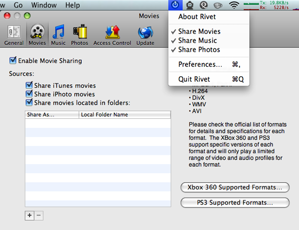
01.24.2009 09:55
The (un)joy of SEG-Y
[PDF] Schwehr, seismic-py: Reading seismic data with Python., The Python Papers, 3:2, 8 pages, Sep 4, 2008.
I'm in the process of rewriting segy-py/seismic-py and calling it simplesegy. This new library is only meant to handle the low level parsing with minimal logic and preferably no support for things like header math. BTW, I think header math is a bad thing... use a separate database to prevent polution of the original segy.
One feature I do want to get right is being able to return the location/position of traces/shots. With the Driscoll EdgeTech Chirp system, I had it right. Just divide the raw values by 3600.0 and I had the position...
def position_geographic(self):
return self.hdr['X'] / 3600., self.hdr['Y']/ 3600.
This gives:
Position Raw: (-422142, 118406) Position: (-117.26166666666667, 32.890555555555558)For this current rewrite, the goal is to be able to do templated metadata generation of UN Law of the Sea Knudsen chirp data. When I try the same thing, I get:
Position Raw: (513074681, 52682969) Position? (142520.74472222221, 14634.158055555556)I know that 142°E,14°N is the right neck of the woods, but the format does not contain any info about how the position is represented. Neither the EdgeTech or Knudsen has anything that says how I am supposed to interpret the coordinates... neither has an Extended Textual Stanza (See Rev 1 Appendix D). To be fair, the Knudsen reports it is SEG-Y Rev 0, but still.
From the Knudsen 320BR chirp manual:
7.3.4.6 SEG-Y Extended Data Fields The original SEG-Y specification does not account for many useful data fields. If the user selects the option to include the extended data fields, numerous operation controls are recorded in the unassigned bytes at the end of the Rev0 Trace header. Some SEG-Y readers do not recognize files that contain data in these bytes so it is advisable to verify the requirements for the desired reader application before selecting this option.There doesn't seem to be any documentation out there, but I've at least got other software around that can decode the positions that I can look at - mbystem:
% mbsegylist -Ifoo.sgy | head -3 2007/11/29/13/24/20.002000 0.000 142.520747 14.634158 4806 1 0 0 2.666 0.000060 22222 1.333320 2007/11/29/13/24/24.002000 4.000 142.520836 14.634398 4807 1 0 0 2.666 0.000060 22222 1.333320 2007/11/29/13/24/28.002000 4.000 142.520942 14.634687 4808 1 0 0 2.666 0.000060 22222 1.333320Looking at the EdgeTech, mbsegylist can't read it:
% mbsegylist -Ilj101.sgy | head -3 2002/11/13/21/48/05.003000 0.000 -0.000000 0.000000 49573 1 0 0 0.017 0.000040 1988 0.079520 2002/11/13/21/48/05.003000 0.000 -0.000000 0.000000 49574 1 0 0 0.017 0.000040 1988 0.079520 2002/11/13/21/48/05.003000 0.000 -0.000000 0.000000 49575 1 0 0 0.017 0.000040 1988 0.079520This causes me to have horrible code like this to detect the two cases. It is pretty safe, but if I end up with a seismic line that passes really close to (0,0) I will have a problem. And I'm likely leaving out lots of other ways that people are encoding X and Y.
def position_geographic(self):
'''@bug: this will fail near 0,0'''
h = self.hdr
x = h['X'] / 3600.
y = h['Y']/ 3600.
if abs(x) > 180 or abs(y)>90:
x /= 1000.
y /= 1000.
return x,y
My favorite part of all this is the Knudsen SEG-Y Text Header. This is not helpful! Yes
the fields are there, but it would help if they were filled in more than just the
instrument type in C 4!
C 1 CLIENT COMPANY CREW NO C 2 LINE AREA MAP ID C 3 REEL NO DAY-START OF REEL YEAR OBSERVER C 4 INSTRUMENT: MFG KEL MODEL 320B/R SERIAL NO 030505 C 5 DATA TRACES/RECORD AUXILIARY TRACES/RECORD CDP FOLD C 6 SAMPLE INTERVAL SAMPLES/TRACE BITS/IN BYTES/SAMPLE C 7 RECORDING FORMAT FORMAT THIS REEL MEASUREMENT SYSTEM C 8 SAMPLE CODE: FLOATING PT FIXED PT X FIXED PT-GAIN CORRELATED C 9 GAIN TYPE: FIXED BINARY FLOATING POINT OTHER C10 FILTERS: ALIAS HZ NOTCH HZ BAND - HZ SLOPE - DB/OCT C11 SOURCE: TYPE NUMBER/POINT POINT INTERVAL C12 PATTERN: LENGTH WIDTH C13 SWEEP: START HZ END. HZ LENGTH MS CHANNEL NO TYPE C14 TAPER: START LENGTH MS END LENGTH MS TYPE C15 SPREAD: OFFSET MAX DISTANCE GROUP INTERVAL C16 GEOPHONES: PER GROUP SPACING FREQUENCY MFG MODEL C17 PATTERN: LENGTH WIDTH C18 TRACES SORTED BY: RECORD CDP OTHER C19 AMPLITUDE RECOVERY: NONE SPHERICAL DIV AGC OTHER C20 MAP PROJECTION ZONE ID COORDINATE UNITS C21 PROCESSING: C22 PROCESSING: ...At this point, I'm also able to print out a trace:
I've also got a screenshot from SonarWeb to help me sort things out:
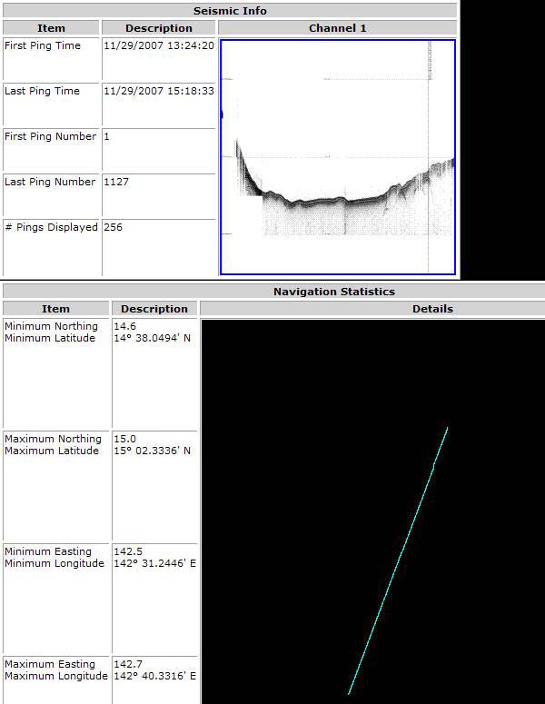
Code should be online in a couple days.
01.23.2009 21:58
4 more youtube videos - Chart of the Future
In this first one, the traffic lanes and buoys are from EarthNC.
And this one of work that Alex Derbes and Nick Validis did back in the 90's...
01.23.2009 19:05
Using OpenStreetMap on other sites
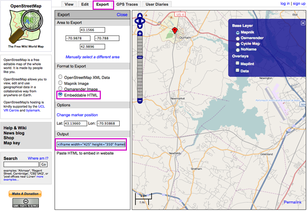
Copy the html from the output textbox:
<iframe width="600" height="350" frameborder="0" scrolling="no"
marginheight="0" marginwidth="0"
src="http://www.openstreetmap.org/export/embed.html?bbox=-70.9878,42.9896,-70.788,43.1566&layer=mapnik&marker=43.13660,-70.93868"
style="border: 1px solid black">
</iframe><br />
<small>
<a href="http://www.openstreetmap.org/?lat=43.0731&lon=-70.8879&zoom=12&layers=B000FTFTT&mlat=43.13660&mlon=-70.93868">View Larger Map</a>
</small>
The results:
View Larger Map
01.23.2009 17:36
Gateway LNG
A piece in Platts LNG Daily [subscription required] suggests that an LNG vessel waiting to unload at Excelerate's Northeast Gateway LNG deepwater port off the Massachusetts coast may be contributing to relatively low regional natural gas prices during the winter months.
01.23.2009 17:33
AIS SARTs for Oil Spills?
What is the chance that these devices can be cheaply adapted for oil spill response? Can we make them transport close enough to how oil moves on the surface? Economies of scale will likely make these devices reasonably inexpensive. Responders could drop these devices into large areas of oil or debris. Or, for training exercises, they could simulate the location of an oil spill.
Also, there were some trials of AIS SARTs going on off of Key West last week. Sounds like the results were really good.
01.23.2009 17:24
2007 Vessel-Quieting Symposium Final Report
The report mentions AIS on Page 26:
Automatic Identification System (AIS) for large vessels was generally seen as an important database. An overarching question is how to integrate AIS with other geospatial databases to be the most useful in describing and predicting anthropogenic contributions to marine ambient noise and potential impactsLeila Hatch was the chair of Session III - Non-Regulatory Incentives to Reduce Sound Emission from Large Commercial Vessels. Since then, we've published a paper that used AIS in looking at vessel noise:
[PDF] - Hatch, L., C. Clark, R. Merrick, S. Van Parijs, D. Ponirakis, K. Schwehr, M. Thompson, D. Wiley, Characterizing the Relative Contributions of Large Vessels to Total Ocean Noise Fields: A Case Study Using the Gerry E. Studds Stellwagen Bank National Marine Sanctuary, Environmental Management, 42(5), 735-52, Nov 2008.
01.21.2009 18:04
MS Virtual Earth on Mac with SilverLight
And this is doubly cool because it was brought up because of AIS Vessel Tracking. Too bad there are no vessels currently in the system. Fullscreen mode works but interaction with the map widgets started working very slowly.
http://www.portmetrovancouver.com/
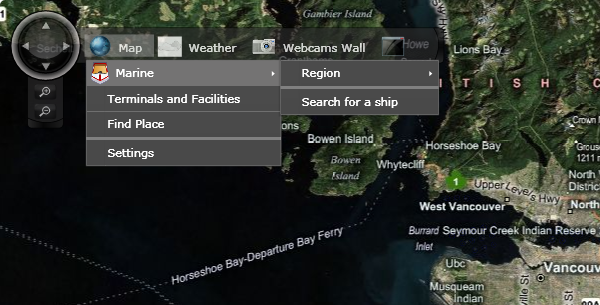
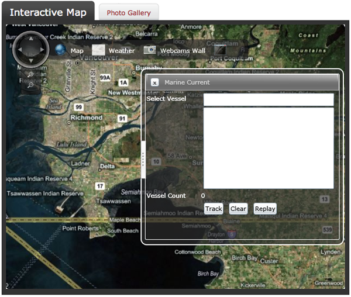
Trackback: MS Virtual Earth: GIS in VE, Wii, Routing Service, Search for Mobile and More [SlashGeo]
01.21.2009 17:15
Dealing with PPT files for an internal mediawiki site
function detectScript($file, $mime, $extension) {
global $wgAllowTitlesInSVG;
#ugly hack: for text files, always look at the entire file.
#For binarie field, just check the first K.
# 4 lines added by Kurt Schwehr 21-Jan-2009
# Passes powerpoints without any checks
if ($extension=="ppt") {
wfDebugLog('upload', 'No scripts in the ppt extension ... allowing ' . print_r($extension,true) );
return false;
}
# End of additional code
if (strpos($mime,'text/')===0) $chunk = file_get_contents( $file );
else {
$fp = fopen( $file, 'rb' );
$chunk = fread( $fp, 1024 );
fclose( $fp );
}
01.21.2009 12:39
Help with swf and python templating
Can anyone please help me out with these two things that are tripping me up?
My first problem is that I've been unable convert a SWF video file (with audio) to a more traditional movie file (e.g. H.264 / mp4 ). Everything I've tried so far has either not worked or really messed up the resulting movie. I have access to Mac and Linux (and if really need be to Windows XP). I'd prefer not to purchase any more software. I've got Adobe CS3 (w/ Photoshop, Illustrator, Indesign), the older Flash MX 2004 (before Macromedia got bought by Adobe), and Quicktime Pro.
I don't really want to purchase swf-player or others. The trillian demo seemed to work, but left a water mark.
I tried mencoder, ffmpeg, swftools, vlc and when I got a result, it was not very good. If you know the command line or options that will make one of these work, I would be very grateful!
I just want to convert these two swfs to a more usable format: TR254InnerApproachToSaintJohn.swf and TR254TheChannelIntoTheHarbour.swf from Andres Millian's thesis on this page: UNB Geodesy & Geomatics Engineering Technical Reports
My second question... Does anyone have a simpler explanation / tutorial of how to use create a new template for PasteScript's paster create -t foo? I've found a couple demos, but I need something a bit simpler to get going. I tried looking in the pylons code and I don't seem to see the __init__ code that the other demos talk about. And the pbp.skel package requires zope.test.
01.21.2009 08:46
Google Earth Browser Plugin gadget
Here is what the setup looks like:
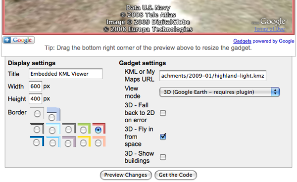
The final result in the blog:
Here is the javascript (with some extra newlines to make it readable):
<script src="http://www.gmodules.com/ig/ifr? url=http://hosting.gmodules.com/ig/gadgets/file/114026893455619160549/embedkmlgadget.xml &up_kml_url=http%3A%2F%2Fschwehr.org%2Fblog%2Fattachments%2F2009-01%2Fhighland-light.kmz &up_view_mode=earth &up_earth_2d_fallback=0 &up_earth_fly_from_space=1 &up_earth_show_buildings=0 &synd=open &w=600 &h=400 &title=Embedded+KML+Viewer &border=%23ffffff%7C0px%2C1px+solid+%23993333%7C0px%2C1px+solid+%23bb5555%7C0px%2C1px+solid+%23DD7777%7C0px%2C2px+solid+%23EE8888 &output=js"></script>For those of you who are not able (or allowed) to install the plugin, here is what it looks like:
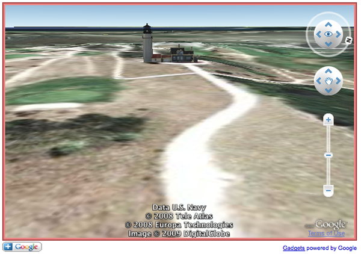
Highland Light in the Google Sketchup 3D Warehouse... seems to act a little strange.
01.20.2009 22:05
David Sandwell on Bathymetry and Google
Update 24-Jan-2009: For those who would like to see the data, V5 is available here: SRTM30_PLUS: DATA FUSION OF SRTM LAND TOPOGRAPHY WITH MEASURED AND ESTIMATED SEAFLOOR TOPOGRAPHY, SRTM30_PLUS V5.0 September 16, 2008 by Joseph J. (JJ) Becker David T. Sandwell.
David Sandwell sent me a note about the current state of global gridded bathymetry:
The new bathymetry in Google Earth comes mostly from a recent compilation called SRTM30_PLUS. The global bathymetry map (30 arc second resolution) is based on sparse ship soundings and dense satellite altimeter measurements of the marine gravity field. This is basically an updated version of the Smith and Sandwell grids but at a finer grid spacing and pole-to-pole. The land data are an exact copy of the SRTM30 data. SRTM30_PLUS means SRTM30 land PLUS the ocean. Much more information, including access to the global grids, is available at: http://topex.ucsd.edu/WWW_html/srtm30_plus.html Google has added some very high resolution data sets in a few coastal areas and has done some work matching the bathymetry with the coastlines. Our site includes a place to comment on the data quality; negative comments are the most valuable. These comments will help us to improve the bathymetry for the next version. Actually Google is one version behind since they have V4.0 and the latest version published in September is V5.0 so a number of things have been fixed. To confirm the source of this grid fly to the location N0 E94.75 to observe the initials DTS/SIO. The signature is a way to keep track of how the grid is being used. We have two more years of NSF funding to continue the assembly of raw ship soundings and updating the grids so complaints and suggestions will be mapped into a to-do list. Also we accept ship soundings in almost any format so send me an e-mail if you have data. The SRTM30_PLUS grid has a matching grid of source identification number so we can see which cells are empty and trace data back to the original source. In addition to the grids we will make the (public) raw edited sounding data available to everyone. David T. Sandwell Scripps Institution of Oceanography dsandwell@ucsd.eduIf you are interested in the topic, make sure to read:
Global Bathymetry and Elevation Data at 30 Arc Seconds Resolution: SRTM30_PLUS by J. J. Becker, D. T. Sandwell, W. H. F. Smith, J. Braud, B. Binder, J. Depner, D. Fabre, J. Factor, S. Ingalls, S-H. Kim, R. Ladner, K. Marks, S. Nelson, A. Pharaoh, G. Sharman, R. Trimmer, J. VonRosenburg, G. Wallace, and P. Weatherall.
JJ Becker's thesis: Improved Global Bathymetry, Global Sea Floor Roughness, and Deep Ocean Mixing, 2008.
and a number of articles on David Sandwell's publications page.
The embedded bathymetry info:
BathymetryTag-SIO.kmz
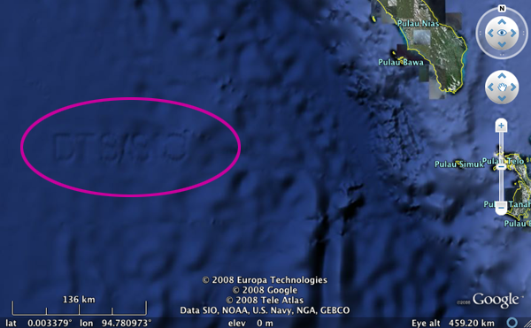
Trackback: Links: Google Ocean soon? Scilly, Cove, bathymetry redux, Digital Karnak... [ogleearth]
01.20.2009 18:26
Google Earth Browser Plugin - Hello World
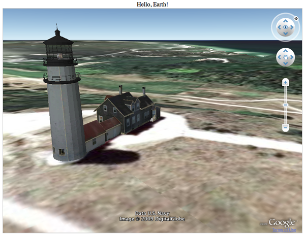
<!DOCTYPE html PUBLIC "-//W3C//DTD XHTML 1.0 Transitional//EN""http://www.w3.org/TR/xhtml1/DTD/xhtml1-transitional.dtd"><html>
<meta http-equiv="content-type" content="text/html; charset=utf-8" />
<head>
<title>Hello Google Earth!</title>
<script src="http://www.google.com/jsapi?key=ABQIAAAAM1F8u7ITEI-8fznypC4hMhRvjyYGNOjAIS98eSpdzWedmD3E9BTd8wbBTwPfUiqpY0mIBlJTwIDOMQ"></script>
<script>
google.load("earth", "1");
var ge = null;
function init() {
google.earth.createInstance("map3d", initCB, failureCallback);
}
function initCB(object) {
ge = object;
ge.getWindow().setVisibility(true);
var networkLink = ge.createNetworkLink("");
networkLink.setFlyToView(true);
var link = ge.createLink("");
link.setHref("http://132.177.103.241/kurt/highland-light.kmz");
networkLink.setLink(link);
ge.getFeatures().appendChild(networkLink);
ge.getNavigationControl().setVisibility(ge.VISIBILITY_SHOW);
}
function failureCallback(object) {
}
</script>
</head>
<body onload='init()' id='body'>
<center>
<div>
Hello, Earth!
</div>
<div id='map3d_container'
style='border: 1px solid silver; height: 600px; width: 800px;'>
<div id='map3d' style='height: 100%;'></div>
</div>
</center>
</body>
</html>
Google has created some great demos. For instance, check out the Drive Simulator:
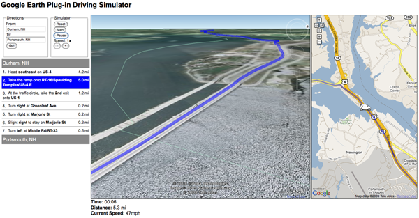
01.20.2009 09:46
Day of the Icicle
The falls downtown this morning...
Compare that to a morning walk I took last week in Key West (I got a grand total of about 3 hours of exploring in):
01.19.2009 23:43
Why not to have the same message in multiple DAC/FI locations
First, if a Electronic Chart System (ECS) is setup to work with the first 366/54 and the vendor is not aware of 303/54 being the same message content, then the vessel will not recognize the message when it transits to Alaska. This is adding extra complexity to every ECS/ECDIS system that might end up in multiple locations on the Earth.
Second, this reuse drastically collapses the space of available messages from over 17 thousand to something like 120 to 250. That is implying that for a particular area, there is only a DAC of 1 for international IMO messages, a local DAC, and possibly a 3rd or 4th regional DAC that can be used in a particular area.
There is no reason not to reuse the same DAC/FI else where in the world. If you are a competent authority, I strongly urge you to reuse other binary application messages from other DACs and keep the original DAC/FI. If the message, was originally 366/54, use 366/54 no matter where you are in the world. You can authorize the use of transmitting that DAC/FI pair in your part of the world.
If you see that someone else has a great message, by all means use it, but please don't change the DAC/FI. To quote the ITU R1371-3 specification for AIS (P. 58, Annex 5, 1.2):
It is recommended that the administrator of application specific messages base the DAC selection on the maritime identification digit (MID) of the administrator's country or region. It is the intention that any application specific message can be utilized worldwide. The choice of the DAC does not limit the area where the message can be used.[emaphasis added]
So if you are creating a new type of message, put it in your DAC. If you are using an existing message, do not put it in another DAC.
Putting a DAC in a message should not specify where in the world the transmitter is located. Location can be determined based on other AIS messages and/or the MMSI of a known station.
01.19.2009 23:10
AIS Binary Application Message Collection
The group created a sample to get the process kicked off. The message is in DAC 235 and is an addressed message 6 for AtoN monitoring.
First, here is the summary looks like: 235-10-6-sum-aton-monitoring.doc
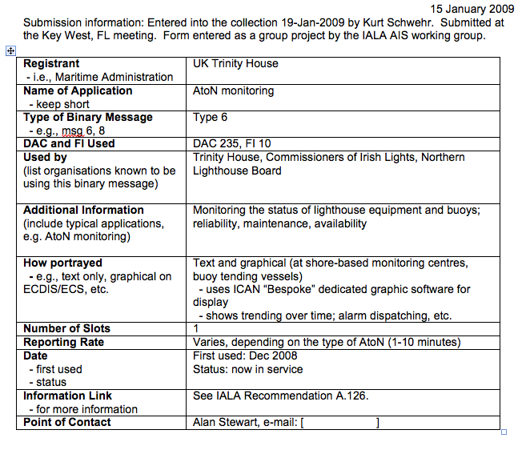
With the summary is also a detailed description: 235-10-6-aton-monitoring.doc. In addition to the bits shown here, it is important to give as much extra text as possible to explain the AIS message. e.g.
GLA Format for AIS Aids to Navigation Monitoring Message INTRODUCTION One of the functions of the AIS AtoN Transponder is to provide Aids to Navigation monitoring data via AIS message type 6 for the AtoN administration. This message 6 is an addressed binary message, which is specified by ITU. MESSAGE INTERVALS The interval between the transmission of these messages will be synchronized with message 21, although not necessarily at the same reporting rate. If Message 21 is not used at a particular site, then the reporting interval should be selected to minimise the power requirement of the transponder, whilst still providing enough data to enable meaningful diagnostic analysis. ...
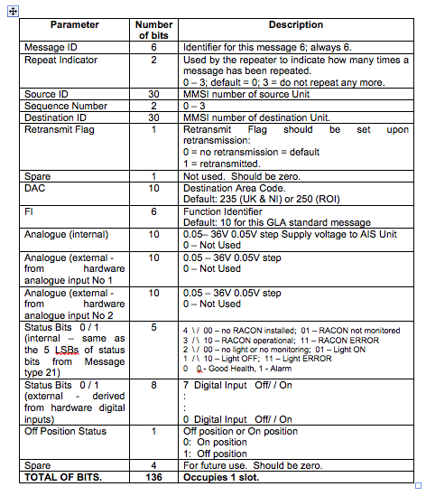
Please, only one message per document. Send item for the collection to kurt at ccom.unh.edu.
Also, note that documents in the collection do not in any way control the use of DAC's and FI's. Control of DAC's and FI's are in the hands of Regional Competent Authorities.
01.19.2009 17:45
segy EBCDIC encoded text blocks
% python
>>> import codecs
>>> f = codecs.open('foo.sgy', 'r', 'ascii')
>>> hdr = f.read(3200)
UnicodeDecodeError: 'ascii' codec can't decode byte 0xc3 in position 0: ordinal not in range(128)
This gave me a strategy to see which codecs would work. Looking at
the codecs directory:
% grep -i ebcdic /sw/lib/python2.6/encodings/*.py /sw/lib/python2.6/encodings/aliases.py: 'ebcdic_cp_ca' : 'cp037', /sw/lib/python2.6/encodings/aliases.py: 'ebcdic_cp_nl' : 'cp037', /sw/lib/python2.6/encodings/aliases.py: 'ebcdic_cp_us' : 'cp037', /sw/lib/python2.6/encodings/aliases.py: 'ebcdic_cp_wt' : 'cp037', /sw/lib/python2.6/encodings/aliases.py: 'ebcdic_cp_he' : 'cp424', /sw/lib/python2.6/encodings/aliases.py: 'ebcdic_cp_be' : 'cp500', /sw/lib/python2.6/encodings/aliases.py: 'ebcdic_cp_ch' : 'cp500', /sw/lib/python2.6/encodings/cp037.py:""" Python Character Mapping Codec cp037 generated from 'MAPPINGS/VENDORS/MICSFT/EBCDIC/CP037.TXT' with gencodec.py. /sw/lib/python2.6/encodings/cp1026.py:""" Python Character Mapping Codec cp1026 generated from 'MAPPINGS/VENDORS/MICSFT/EBCDIC/CP1026.TXT' with gencodec.py. /sw/lib/python2.6/encodings/cp500.py:""" Python Character Mapping Codec cp500 generated from 'MAPPINGS/VENDORS/MICSFT/EBCDIC/CP500.TXT' with gencodec.py. /sw/lib/python2.6/encodings/cp875.py:""" Python Character Mapping Codec cp875 generated from 'MAPPINGS/VENDORS/MICSFT/EBCDIC/CP875.TXT' with gencodec.py.So I expect to get a number of successful decodes by trying every codec. Python already comes with a tool to list the codecs:
% python /sw/lib/python2.6/Tools/unicode/listcodecs.py
all_codecs = [
'ascii',
'base64_codec',
'big5',
'big5hkscs',
'bz2_codec',
'charmap',
'cp037',
'cp1006',
'cp1026',
'cp1140',
'cp1250',
...
'tis_620',
'undefined',
'unicode_escape',
'unicode_internal',
'utf_16',
'utf_16_be',
'utf_16_le',
'utf_32',
'utf_32_be',
'utf_32_le',
'utf_7',
'utf_8',
'utf_8_sig',
'uu_codec',
'zlib_codec',
]
Copying the listcodecs.py file to the local directory, I can use it to try each of the codecs.
#!/usr/bin/env python
import codecs
import listcodecs
import encodings
for codec_name in listcodecs.listcodecs(encodings.__path__[0]):
try:
f = codecs.open('foo.sgy', 'r', codec_name)
hdr = f.read(3200)
str(hdr)
print 'CODEC SUCCESS:',codec_name
print hdr
except:
print 'FAILED:',codec_name
The results of the above look something like this:
FAILED: ascii FAILED: base64_codec FAILED: big5 FAILED: big5hkscs FAILED: bz2_codec FAILED: charmap CODEC SUCCESS: cp037 C 1 CLIENT COMPANY CREW NO C 2 LINE AREA MAP ID C 3 REEL NO DAY-START OF REEL YEAR OBSERVER C 4 INSTRUMENT: MFG KEL MODEL 320B/R SERIAL NO 030505 C 5 DATA TRACES/RECORD AUXILIARY TRACES/RECORD CDP FOLD C 6 SAMPLE INTERVAL SAMPLES/TRACE BITS/IN BYTES/SAMPLE C 7 RECORDING FORMAT FORMAT THIS REEL MEASUREMENT SYSTEM C 8 SAMPLE CODE: FLOATING PT FIXED PT X FIXED PT-GAIN CORRELATED C 9 GAIN TYPE: FIXED BINARY FLOATING POINT OTHER C10 FILTERS: ALIAS HZ NOTCH HZ BAND - HZ SLOPE - DB/OCT C11 SOURCE: TYPE NUMBER/POINT POINT INTERVAL ...Here are the codecs that succeeded:
% ./codec_test.py | grep SUCCESS CODEC SUCCESS: cp037 CODEC SUCCESS: cp1026 CODEC SUCCESS: cp1140 CODEC SUCCESS: cp424 CODEC SUCCESS: cp500 CODEC SUCCESS: cp875 CODEC SUCCESS: quopri_codec CODEC SUCCESS: string_escapeLooking at what those values in the table of Standard Encodings, it is clear that we only want cp027, which is EBCDIC in English. We could also use cp437, cp424, cp500, cp875, cp1026, or cp1140 as fallbacks. However, quopri_codec and string_escape return junk.
To see what cp037 looks like, take a look at this page: http://unicode.org/Public/MAPPINGS/VENDORS/MICSFT/EBCDIC/CP037.TXT
01.19.2009 09:50
AGU Virtual Globes poster on Phoenix
John Bailey's AGU 2008 images
01.18.2009 22:36
Converting old Arc/Info V7 Coverages
I could not figure out how ot get gdal to read the Arc/Info V7 project with the avcbin driver. Monica used AVCE00 to convert the files to e00. I took a converted e00 file and ran it though gdal:
% ogr2ogr -f KML minerva-canyon.{kml,e00}
After a little bit of tweaking, here is the view in Google Earth with only a few of the placemarks.
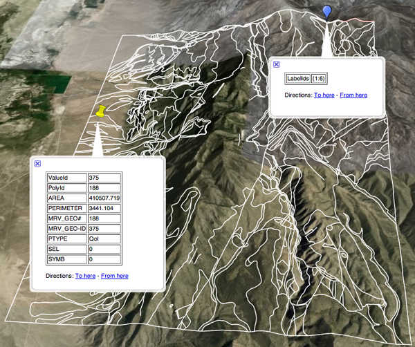
How do you parse the INFO database files? Perhaps this: v7_bin_cover.html#ARC.DAT
01.17.2009 20:50
Combining JavaScript libraries with Django using fink
This is on Mac OSX 10.5.6 with Django 1.0.2.
% fink install django-py26
% fink install tinymce-js
% cd ~/Desktop
% django-admin.py startproject django_tinymce_demo
% mkdir -p templates/flatpages
% cat << EOF > templates/flatpages/default.html
<html>
<head>
<title>{{ flatpage.title }}</title>
</head>
<body>
<h1>{{flatpage.title}}</h1>
{{ flatpage.content }}
</body>
</html>
EOF
% mkdir -p templates/admin/flatpages/flatpage
% cp /sw/lib/python2.6/site-packages/django/contrib/admin/templates/admin/change_form.html \
templates/admin/flatpages/flatpage/
% emacs templates/admin/flatpages/flatpage/change_form.html
Just after this line:
<script type="text/javascript" src="../../../jsi18n/"></script>Add these lines to change_form.html. This tells the admin app to use the TineMCE editor with text areas for a flatpage change.
<!-- new change -->
<script type="text/javascript" src="/javascript/tinymce/tiny_mce.js"></script>
<script type="text/javascript">
tinyMCE.init({
mode: "textareas",
theme: "simple"
});
</script>
<!-- END new change -->
Now edit settings.py. Add these lines to the top of the file:
import os.path PROJECT_DIR = os.path.dirname(__file__) JSPATH = '/sw/lib/javascript'And set these lines:
DATABASE_ENGINE = 'sqlite3' DATABASE_NAME = 'demo.db3'I'm on the east coast, but you could leave this the way it is:
TIME_ZONE = 'America/New_York'Set the template dirs and the installed apps:
TEMPLATE_DIRS = (
PROJECT_DIR+'/templates',
)
INSTALLED_APPS = (
'django.contrib.auth',
'django.contrib.contenttypes',
'django.contrib.sessions',
'django.contrib.sites',
'django.contrib.admin',
'django.contrib.flatpages',
)
That concludes the changes to settings.py. Now get everything setup in the urls.py:
from django.conf.urls.defaults import *
from settings import JSPATH # JavaScript location
from django.contrib import admin
admin.autodiscover()
urlpatterns = patterns('',
(r'^admin/(.*)', admin.site.root),
(r'^javascript/(?P<path>.*)$', 'django.views.static.serve',
{'document_root': JSPATH}
),
(r'',include('django.contrib.flatpages.urls')),
)
Time to get the django webserver going and start working with the admin interface.
% python manage.py syncdb % python manage.py runserver % open http://127.0.0.1:8000/admin/sites/site/1/In the Sites admin, change example.com to the settings for the test server:
domain name: 127.0.0.1:8000 display name: localhostNow create a flatpage:
% open http://127.0.0.1:8000/admin/flatpages/flatpage/Click Add flat page on the top right. For the URL, make it /test/. Pick your 127.0.0.1:8000 site on the bottome left and click Save and continue editing. Finally, click View on site.
While you were editing, you should see these icons at the bottom of the Content editing area. (B I U
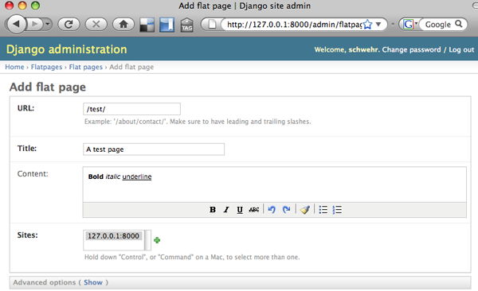
01.17.2009 19:38
Google Earth updated bathymetry
Update 22-Jan-2009: More people are noticing... Google Bathymetry Improved
I was just looking at Google Earth and realized that the bathymetry has been dramatically improved near shore. For the US, it looks like they imported the Coastal Relief model. It's definitely better, but you can see that the Coastal Relief model is digitized from contours. The contours end up getting rendered has hard stepped shadows. For marine scientists, that is pretty distracting, but the improvement makes Google Earth much more useful.
When did this change happen?
01.16.2009 13:52
Ben Smith's work on visualizing VOS tracks
http://vislab-ccom.unh.edu/vos/
Check out some of the results:
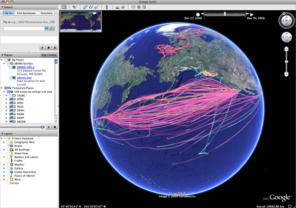
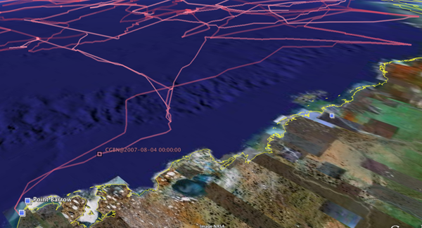
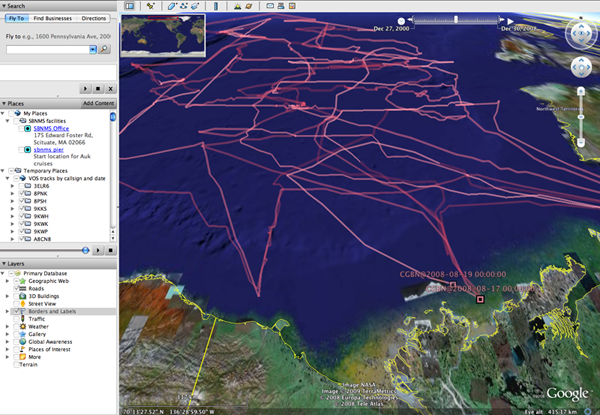
This blue route would be nice one to have!
01.15.2009 06:02
Traveling south
01.13.2009 09:13
fink and javascript - openlayers test case
% fink install openlayers-js % ls -l /sw/lib/javascript/ ls -l /sw/lib/javascript/openlayers/ total 560 -rw-r--r-- 1 root admin 572604 Oct 27 13:04 OpenLayers.js drwxr-xr-x 25 root admin 850 Jan 13 09:03 img drwxr-xr-x 3 root admin 102 Jan 13 08:57 themeI'll likely be adding another JavaScript API today for some Django work.
Please let me know if you use this successfully or if it causes trouble.
It is interesting to look through the automated fink build errors: http://fink.sodan.ecc.u-tokyo.ac.jp/build-10.4-powerpc/
01.12.2009 18:47
AIS Binary Message queuing format
<?xml version="1.0" encoding="UTF-8"?>
<fetcherformatter version="0.1">
<binmsg sitename="Tampa" msgtype="8" dac="366" fi="33" id="3" messagetype="3"
contenttype="partial" droptime="1215819600" priority="1">
<bounding_region_wkt>POLYGON((101.5555 -74.543, 104.214 -74.543, 104.214 -72.102, 101.5555 -72.102, 101.5555 -74.543))</bounding_region_wkt>
<marktime>1215819000</marktime> <!-- time the data was recorded or generated -->
<binary>111000000110100000000001001101000000010100000000001001010000000000100100000000000000000000000000</binary>
</binmsg>
</fetcherformatter>
The key is to keep the processing simple and allow the format to grow
in the future if new requirements come up. Right now, we are just
using bounding boxes, but I've used WKT to allow
regions to be arbitrary in the future. The payload is binary data so
any routing or queueing mechanisms do not need to understand the
message. If the contenttype is "complete," the queueing system can
just add the binary to the standard message header, dac, and fi. It
then can send a BBM (NMEA Binary Broadcast Message) sentence to a
transponder.
With XML, there is always the question of what to put in as attributes and what to include within the body of a binmsg tag. I put most of the information in as attributed rather than child nodes to make XPath as simple as possible. The time the message was generated (marktime), is not critical to sorting (only droptime is), so I put it in the body.
Here is a marked up message:
<?xml version="1.0" encoding="UTF-8"?>
<!-- Kurt Schwehr, 09-Jan-2009 -->
<!-- I tried to make this XPath friendly for use in the future -->
<fetcherformatter version="0.1">
<!-- Original FF: BMS, Tampa, 101.5555, -74.543, 104.214, -72.102, 3, 3, 0,
1215819000,0101101110100001,
0011010111001101111000000110100000000001001101000000010100000000001001010000000000100100000000000000000000000000 -->
<!-- Optional attribute: sitename: is required by PAWS, but I see no need
to specify a site for areas that do not have PAWS. Something downstream
can always do a geographic serach for a sitename from a bounding box.
The message might span several sites. -->
<!-- Optional attribute: id: station or zone this applied to / comes from -->
<!-- Optional attribute: messagetype: the environmental message subtype or
zone type -->
<!-- Content type:
'partial': the message needs to be place within a message and may be
joined with others.
'complete': contains the complete content of a binary message
-->
<!-- Optional attribute: droptime is the time after which this message
should just be dropped. UNIX UTC timestamp -->
<!-- Optional attribute: priority: 10 for highest, 1 for lowest. Leave off if
no particular priority -->
<binmsg sitename="Tampa" msgtype="8" dac="366" fi="33" id="3" messagetype="3"
contenttype="partial" droptime="1215819600" priority="1">
<!-- WKT == Well-known Text http://en.wikipedia.org/wiki/Well-known_text -->
<!-- Using EPSG SRID 4326 http://en.wikipedia.org/wiki/SRID -->
<bounding_region_wkt>POLYGON((101.5555 -74.543, 104.214 -74.543, 104.214 -72.102, 101.5555 -72.102, 101.5555 -74.543))</bounding_region_wkt>
<marktime>1215819000</marktime> <!-- time the data was recorded or generated -->
<!-- binary data but without the dac and fi -->
<binary>111000000110100000000001001101000000010100000000001001010000000000100100000000000000000000000000</binary>
</binmsg>
<!-- more messages can go here... -->
</fetcherformatter>
01.12.2009 07:53
modwsgi for apache2 in fink
I just added modwsgi to fink for Mac OSX 10.5. Here is a quick tutorial that shows it working adapted from rkblog mod_wsgi.
First, enable mod-wsgi for apache2:
% fink selfupdate % fink install libapache2-mod-wsgi-py26 % sudo a2enmod wsgi2.6 % sudo apache2ctl restartNow we can create the test app:
% mkdir ~/Sites/test-wsgi && cd ~/Sites/test-wsgi % echo "AddHandler wsgi-script .wsgi" > .htaccessNow create test.wsgi
def application(environ, start_response):
status = '200 OK'
output = 'Hello World from a WSGI app!'
response_headers = [('Content-type', 'text/plain'),
('Content-Length', str(len(output)))]
start_response(status, response_headers)
return [output]
Now try the test:
% open http://localhost/~$USER/test-wsgi/test.wsgi
01.11.2009 16:58
fink mod_python
% fink install libapache2-mod-python-py26 % sudo a2enmod python2.6 % sudo apache2ctl restartThis time, I'm going to use .htaccess in a test directory to control apache2's loading of python.
% mkdir ~/Sites/test2 && cd ~/Sites/test2
% cat << EOF > .htaccess
AddHandler mod_python .py
PythonHandler mptest
PythonDebug On
EOF
% cat << EOF > mptest.py
from mod_python import apache
def handler(req):
req.content_type = 'text/plain'
req.write("Hello World!")
return apache.OK
EOF
% open http://localhost/~$USER/test2/mptest.py
You should now be looking at a Hello World! in your web browser.
Time to switch to a real handler. The publisher.
% mkdir ~/Sites/test3 && cd ~/Sites/test3 % cat << EOF > .htaccess AddHandler mod_python .py PythonHandler mod_python.publisher PythonDebug On EOF % cat << EOF > hello.py def index(): s = '''<html> <body> <h2>Hello World! mod python publisher</h2> </body> </html> ''' return s EOF % open http://localhost/~$USER/test3/hello.pyYou can then add a page indexing into functions in hello.py. Add this method:
def another_page():
return 'yup, another page'
Then check out this new URL:
% open http://localhost/~$USER/test3/hello.py/another_pageOr add any object that has a string representation. Add these strings to hello.py
foo = 'bar' _fubar = 'not visible'Now try these two URLs:
% open http://localhost/~$USER/test3/hello.py/foo % open http://localhost/~$USER/test3/hello.py/fubarAny object that starts with an underscore is not visible and returns a mod python error in debug mode.
MOD_PYTHON ERROR ProcessId: 78240 Interpreter: '127.0.0.1' ServerName: '127.0.0.1' DocumentRoot: '/sw/var/www/' URI: '/~schwehr/test3/hello.py/fubar' Location: None Directory: '/Users/schwehr/Sites/test3/' Filename: '/Users/schwehr/Sites/test3/hello.py' PathInfo: '/fubar' Phase: 'PythonHandler' Handler: 'mod_python.publisher' Traceback (most recent call last): ...Now to add form handling. Create form.py:
import cgi
import urllib
def handle_form(req):
form = req.form
s = ['<html><body><b>Form fields:</b><ul>',]
for key in form:
s.append(' <li>%s - %s</li>' % (key,cgi.escape(urllib.unquote(form[key]))))
s.append('</ul></body></html>')
return '\n'.join(s)
And open it:
% open http://localhost/~$USER/test3/form.py/handle_form\?first=one&second=twoThe results should look like this:
Form fields:
* second - two
* first - one
01.11.2009 13:53
CGI with Python on a Mac
I've done a bit more with CGI and Python. This works up to handling a form with user input. In my first post on python and cgi, I created helloworld-py.cgi. To improve on this, I first wanted to get some better error handling going. Python provides this through a cgitb module. cgitb (or CGI TraceBack) can be used either just as a response to the web browser, saved as a log file, or both. Here I have both turned on. I then use the AssertionError to force a traceback. cd ~/Sites/test and create demo-py.cgi:
#!/usr/bin/env python
import cgi
#import cgitb; cgitb.enable()
#import cgitb; cgitb.enable(display=0, logdir="/tmp") # Only write log file
import cgitb; cgitb.enable(logdir="/tmp")
print 'Content-type: text/html\n'
print 'Hello, World.'
raise AssertionError('Test raising some exception')
Save this as ~/Sites/test/demo-py.cgi and run open http://localhost/~$USER/test/demo-py.cgi. The results should look like this:
| <type 'exceptions.AssertionError'> | Python 2.6: /sw/bin/python Sun Jan 11 13:19:45 2009 |
| /Users/schwehr/Sites/test/demo-py.cgi in |
| 6 import cgitb; cgitb.enable(logdir="/tmp") |
| 7 |
| 8 print 'Content-type: text/html\n' |
| 9 print 'Hello, World.' |
| 10 raise AssertionError('Test raising some exception') |
| builtin AssertionError = <type 'exceptions.AssertionError'> |
<type 'exceptions.AssertionError'>: Test raising some exception args = ('Test raising some exception',) message = 'Test raising some exception' You can also look in /tmp for the same results: ls -ltr /tmp/tmp*.html. That's much easier to debug than "Internal Server Error"! It would also be nice to be able to allow importing these scripts. This requires that there are no '-' characters in the CGI script names and that the file names end in .py. To handle the file extention, we need to add it to apache2's mime type hander.
% sudo emacs /sw/etc/apache2/mods-enabled/mime.confand add this line next to AddHandler cgi-script .cgi:
AddHandler cgi-script .pyThen restart apache2:
% sudo apache2ctl restartNow we are ready to attempt the next demo where we create a html form document that calls a python cgi when the user presses the submit button. Save this as demo2-from.html
<html> <body> <form method="POST" action="demo2.py"> <p>Some text: <input type="text" name="text"/></p> <p><input type="submit" value="Press to submit"/></p> <input type="hidden" name="hiddenname" value="foo"/> </form> </body> </html>Now create demo2.py:
#!/sw/bin/python
#!/usr/bin/env python
import cgi
import cgitb; cgitb.enable() # For debugging
def main():
print 'Content-type: text/html\n'
print '<p>Processing form</p>'
form = cgi.FieldStorage()
print 'Form:',form
print '<ul>'
for key in form:
print '<li>'
print key,'-',form[key].value
print '</li>'
print '</ul>'
if __name__ == '__main__':
main()
Now run the demo:
% chmod +x demo2.py % open http://localhost/~$USER/test/demo2-from.htmlPut test 123 in the text field and press submit. You should see something like this:
Processing form
Form: FieldStorage(None, None, [MiniFieldStorage('text', 'test 123'), MiniFieldStorage('hiddenname', 'foo')])
* text - test 123
* hiddenname - foo
FieldStorage works similar to a python dictionary.
A final improvement to the script is to combine the form html and the form processing script. cgi.FieldStorage() will return None if there is no form data. demo3.py:
#!/sw/bin/python
#!/usr/bin/env python
import cgi
import cgitb; cgitb.enable() # For debugging
def main():
print 'Content-type: text/html\n'
form = cgi.FieldStorage()
if not form:
print '''<html>
<body>
<form method="POST" action="demo2.py">
<p>Some text: <input type="text" name="text"/></p>
<p><input type="submit" value="Press to submit"/></p>
<input type="hidden" name="hiddenname" value="foo"/>
</form>
</body>
</html>'''
return
print '<p>Processing form</p>'
print form
print '<ul>'
for key in form:
print '<li>'
print key,'-',form[key].value
print '</li>'
print '</ul>'
if __name__ == '__main__':
main()
You can also use the GET method rather than the POST that I used above. Try this:
% open http://localhost/~$USER/test/demo2.py?first=one\&second=twoYou should see this:
Processing form
Form: FieldStorage(None, None, [MiniFieldStorage('first', 'one'), MiniFieldStorage('second', 'two')])
* second - two
* first - one
To see everything that is going on with cgi, there is a test() function. Try out demo4.py:
#!/sw/bin/python import cgi cgi.test()And open it:
% chmod +x demo4.py % open http://localhost/~$USER/test/demo4.py?first=one\&second=twoYou will be presented with a large amount of info about your cgi environment:
Current Working Directory: /Users/schwehr/Sites/test Command Line Arguments: ['/Users/schwehr/Sites/test/demo4.py'] Form Contents:
- first: <type 'instance'>
- MiniFieldStorage('first', 'one')
- second: <type 'instance'>
- MiniFieldStorage('second', 'two')
- DOCUMENT_ROOT
- /sw/var/www/
- GATEWAY_INTERFACE
- CGI/1.1
- HTTP_ACCEPT
- text/html,application/xhtml+xml,application/xml;q=0.9,*/*;q=0.8
- HTTP_ACCEPT_CHARSET
- ISO-8859-1,utf-8;q=0.7,*;q=0.7
- HTTP_ACCEPT_ENCODING
- gzip,deflate
- HTTP_ACCEPT_LANGUAGE
- en-us,en;q=0.5
- HTTP_CACHE_CONTROL
- max-age=0
- HTTP_CONNECTION
- keep-alive
- HTTP_HOST
- localhost
- HTTP_KEEP_ALIVE
- 300
- HTTP_USER_AGENT
- Mozilla/5.0 (Macintosh; U; Intel Mac OS X 10.5; en-US; rv:1.9.0.5) Gecko/2008120121 Firefox/3.0.5
- PATH
- /sw/bin:/sw/sbin:...
- QUERY_STRING
- first=one&second=two
- REMOTE_ADDR
- 127.0.0.1
- REMOTE_PORT
- 56992
- REQUEST_METHOD
- GET
- REQUEST_URI
- /~schwehr/test/demo4.py?first=one&second=two
- SCRIPT_FILENAME
- /Users/schwehr/Sites/test/demo4.py
- SCRIPT_NAME
- /~schwehr/test/demo4.py
- SERVER_ADDR
- 127.0.0.1
- SERVER_ADMIN
- webmaster@localhost
- SERVER_NAME
- localhost
- SERVER_PORT
- 80
- SERVER_PROTOCOL
- HTTP/1.1
- SERVER_SIGNATURE
- <address>Apache/2.2.9 (Unix) PHP/5.2.6 Server at localhost Port 80</address>
- SERVER_SOFTWARE
- Apache/2.2.9 (Unix) PHP/5.2.6
01.11.2009 13:09
Images of winter
A frozen log jam in New Market
Winter sunset colors can be really awesome...
01.11.2009 09:12
fink apache2 cgi hello world tutorial
First, in System Preferences -> Sharing, make sure the "Web Sharing" is off. Web Sharing will turn on Apple's apache2 server.
% fink install apache2 # I pick apache2-mpm-prefork when asked, but it does not matter % open http://localhostYou should now be seeing a working apache2 via fink. It should say something like "It works!" in your web browser. Now we need to set about configuring apache2. Here I will use emacs as my editor (fink install emacs22), but you can replace that with your favorite editor, but I don't know how to edit system config files with Aqua based editors like Smultron and AquaEmacs.
% sudo a2enmod cgi # Enable CGI applications % sudo emacs /sw/etc/apache2/mods-enabled/userdir.conf &Now in emacs, edit the apache2 userdir.conf config file and add a second Options line to look like this:
Options +ExecCGIThis enables CGI programs for any user web area on the computer. You will likely not want to do this if this machine has untrusted users. Now we need to tell apache2 which files will be treated as CGI programs. Uncomment the cgi-script AddHandler line in the mime type config file:
% sudo emacs /sw/etc/apache2/mods-enabled/mime.conf &The line should now look like:
AddHandler cgi-script .cgiThe last config change we need to make is to disable suexec. In the current fink setup, suexec is always enabled and breaks cgi. If it is not disabled, you will your CGI will return Internal Server Error and see errors like this in the logs:
% tail -1 /sw/var/log/apache2/suexec.log [2009-01-11 09:01:36]: user mismatch (_www instead of www)Alex Vial has a post on fink users about how he got things working again.
% sudo mv /sw/lib/apache2/suexec2{,_inactive}
Now it is time to restart apache2 so we can going on the hello world program.
% sudo apache2ctl restartLet's create the cgi script:
% mkdir -p ~/Sites/test && cd ~/Sites/test % cat << EOF > helloworld.cgi #!/usr/bin/perl print "Content-type: text/html\n\n"; print "Hello, World."; EOF % chmod +x helloworld.cgi % open http://localhost/~$USER/test/helloworld.cgiHopefully at this point you should have "Hello, World." displaying in your browser. Perl is the default for most old world cgi scripts, but since I like python, I will leave off with a python cgi example.
% cat << EOF > helloworld-py.cgi #!/usr/bin/env python print "Content-type: text/html\n" print "Hello, World." EOF % chmod +x helloworld-py.cgi % open http://localhost/~$USER/test/helloworld-py.cgiNote that the number of newlines after the content type is important. There must be at least one blank line after the header.
The above has been adapted from: Apache Tutorial: Dynamic Content with CGI - Apache HTTP Server. This is the check to see if suexec has been built into the default setup:
% apache2ctl -V | grep suexec -D SUEXEC_BIN="/sw/lib/apache2/suexec2"suexec is trouble as there are now 'www' and '_www' user names in mac osx. They both have the same uid (70), but suexec gets confused.
% id www uid=70(_www) gid=70(_www) groups=70(_www) % dscl . -read /Users/www % dscl . -read /Users/_www
01.09.2009 11:26
Django Book 2.0 for Django 1.0
Announcing the Django Book, second edition [Adrian Holovaty]
I'm excited to announce that I'm working on a second edition of the Django Book. The first edition, which I cowrote with Jacob Kaplan-Moss, was published in print by Apress more than a year ago, and, sadly, it's become out of date. It covers Django version 0.96, and many of the examples don't work with the current version, 1.0. Fortunately, now that Django has reached 1.0 and is committed to backwards compatibility, this book will have a much longer shelf life. At this point, I've rewritten/edited the first three chapters and published the drafts for free online, as we did the first time around. I plan to add chapters incrementally over the coming weeks. Instead of posting blog entries here, I'll make those "new chapter posted" announcements on my Twitter account. ...
01.07.2009 11:54
Kitchen table AIS

The SR162G takes a really long time for the GPS to lock up. AIS demo mode setup with wireless internet connection not shown.
01.07.2009 08:53
fink info testing - sqlalchemy
Updated 18-Jan: Must force the pythonpath to pick up the source area incase an older version of the package is still installed. See also:
http://www.sqlalchemy.org/trac/ticket/1283
InfoTest: <<
#TestConflicts: sqlalchemy-py%type_pkg[python] # Not needed with PYTHONPATH
TestScript: <<
#!/bin/bash -ev
export PYTHONPATH=$PWD/lib
pushd test
%p/bin/python%type_raw[python] alltests.py || exit 2
popd
<<
<<
Now you can run the test like this:
% fink --test rebuild sqlalchemy-py26When you run that command you will see this appear deep in the middle of the output:
... SQLAlchemy-0.5.0/test/zblog/blog.py SQLAlchemy-0.5.0/test/zblog/mappers.py SQLAlchemy-0.5.0/test/zblog/tables.py SQLAlchemy-0.5.0/test/zblog/tests.py SQLAlchemy-0.5.0/test/zblog/user.py echo Skipping build Skipping build cd test && /sw/bin/python2.6 alltests.py || exit 2 test_fixture (profiling.memusage.MemUsageTest) ... ok test_mapper_reset (profiling.memusage.MemUsageTest) ... ok test_mutable_identity (profiling.memusage.MemUsageTest) ... ok test_session (profiling.memusage.MemUsageTest) ... ok test_with_inheritance (profiling.memusage.MemUsageTest) ... ok test_with_manytomany (profiling.memusage.MemUsageTest) ... ok test_insert (profiling.compiler.CompileTest) ... ok ...The alternative command that I will be using to checkout new versions in the future is this:
% fink --maintainer rebuild sqlalchemy-py26This should validate the resulting debian in addition to running the tests. Testing will hopefully help reduce the load from package updating. If there are good tests in place, we won't have to try by hand to see if a package is okay.
01.06.2009 15:29
MER rovers in Government Computer News
Embedded systems are becoming increasingly sophisticated, as their use on the Mars Rover and at the South Pole attest. And they're becoming more integrated with larger information technology systems Think writing an artificial intelligence program is hard? Try writing one that works on a 20 MHz processor and runs a NASA rover scuttling across Mars. The rovers were already moving about on the Red Planet on their own because sending move-by-move directions from Earth would take too long. But their autonomous navigation software kept getting the units trapped in cul-de-sacs and other locations that were tricky to escape from. To boost the machine's driving skills, NASA's Jet Propulsion Laboratory, which runs the rover space mission, turned to software developed by Carnegie Mellon University research professor Tony Stentz and his student Dave Ferguson. The program, called Field D*, was developed with funding from the Army Research Laboratory and the Defense Advanced Research Projects Agency. The software essentially builds a large-scale map of the terrain it encounters so that when a self-guiding vehicle needs to back out of a dead end, it can easily do so by retracing its steps. ...
01.06.2009 07:37
Phoenix is number 1 Wired Science Breathrough of 2008
1. Finding ice on Mars After a seven-month journey through space, the Phoenix lander touched down on Martian soil, and soon after discovered ice. On May 31, two days after the lander's robotic arm went to work, its camera caught a glimpse of something shiny under the craft. Lead researcher Peter Smith speculated that the landing rockets had blown a thin layer of soil away, exposing buried ice. The big announcement came on Jan. 19, after scientists compared two photos of a ditch called Dodo-Goldilocks. In the first image, several bright nuggets were visible, and four days later the chunks had disappeared. Taking the temperature and atmospheric pressure into account, the specks had to be ice that sublimated after being uncovered by the mechanical claw. The red planet may have an inhospitable climate, but at least it has water, and that will be tremendously useful when the first group of explorers lands there.
01.04.2009 19:04
noaadata 0.41 released
- Added missing close of tr tag in HTML message output reported by Hubert Bischoff
- port-server now can add uscg style per line timestamps and station
- port-server logs the start/stop times, the host info, and the ntp status for each log file
- Think I've fixed the AIS NMEA regex
- Added log_udp script
- New in aisutils: nmea_ait.py (AIS text format), nmea_cnc.py (IVS Vessel Monitor Format), server.py
- New in scripts: decimate, log_udp, and xy2kmlline
- ais_liststations improved
01.04.2009 17:48
AIS JSON encoding
Was just googling the combination of AIS and APRS and ran into this: JSON AIS transmission protocol. I sent an email in the last couple weeks suggesting that JSON might be better for sending AIS messages over the Internet compared to XML. Of note: I don't see any mention of GeoJSON on the page. It would be important to consider GeoJSON when building an JSON AIS definition.
This is a work-in-progress specification for passing parsed AIS data in human- and computer-readable JSON format. If you have ideas for this specification, please email Heikki Hannikainen, OH7LZB (hessu at hes dot iki dot fi). This protocol is useful for transmitting AIS data between AIS receiver sites and live AIS database services, and also for transmitting AIS data between AIS database services which choose to trust each other and exchange data. This specification was initially implemented by Lekkas Dimitris of marinetraffic.com, and documented by Heikki Hannikainen of aprs.fi. Additional feedback has been received from Tapio Sokura, OH2KKU. ...Their two sample messages:
{
"msgtype": 3,
"mmsi":2320787,
"status":14,
"speed":0,
"lon":-1.11023795604706,
"lat":50.7996215820313,
"course":0,
"heading":0,
"timestamp":"20081013091401"
}
{
"msgtype": 5,
"mmsi":211189000,
"imo":8705383,
"callsign":"DQEJ",
"shipname":"SASSNITZ",
"shiptype":69,
"length":0,
"width":0,
"eta":"20081014101000",
"draught":58,
"destination":"TRELLEBORG/SASSNITZ",
"timestamp":"20081013091717"
}
I also just stumbled into aislib - a java AIS parser that integrates with OpenMap
01.04.2009 14:02
ps on mac osx
% ps -aux % ps -adef % topOn the mac, that's just no good. Here is what I finally have figured out:
% top -o cpu -s 2 % ps -a -w -w -x -O user | grep -i ntp 2811 root ?? Ss 0:26.78 /usr/sbin/ntpd -n -g -p /var/run/ntpd.pid -f /var/db/ntp.drift
01.04.2009 10:58
Old - SigGraph2006
01.04.2009 10:20
Templating a python project
Back at the beginning of December, Sean Gillies posted on How to lay out Python project code. I've created two fink info files, but cheetah is not up to 2.6 in fink. You can do an "mdfind cheetah-py.info" and add 2.6 so the type line is like this:
Type: python (2.4 2.5 2.6)Now get and install the paste programs: (21-Jan-2009 Note: pastescript-py is now in fink, so you only need the fink install line).
% fink install wget % sudo -s % cd /sw/fink/10.4/local/main/finkinfo % mkdir -p libs/pythonmodes % cd libs/pythonmodes % wget http://vislab-ccom.unh.edu/~schwehr/software/fink/pastedeploy-py.info % wget http://vislab-ccom.unh.edu/~schwehr/software/fink/pastescript-py.info % exit % fink install pastescript-py26Now, try out paster:
% paster create -t basic_package
Selected and implied templates:
PasteScript#basic_package A basic setuptools-enabled package
Enter project name: sampleprj
Variables:
egg: sampleprj
package: sampleprj
project: sampleprj
Enter version (Version (like 0.1)) ['']: 0.1
Enter description (One-line description of the package) ['']: Sample project
Enter long_description (Multi-line description (in reST)) ['']: multi line description here
Enter keywords (Space-separated keywords/tags) ['']: Demo trial
Enter author (Author name) ['']: Kurt Schwehr
Enter author_email (Author email) ['']: kurt _at_ ccom.unh.edu
Enter url (URL of homepage) ['']: http://schwehr.org
Enter license_name (License name) ['']: GPL
Enter zip_safe (True/False: if the package can be distributed as a .zip file) [False]:
Creating template basic_package
Creating directory ./sampleprj
Recursing into +package+
Creating ./sampleprj/sampleprj/
Copying __init__.py to ./sampleprj/sampleprj/__init__.py
Copying setup.cfg to ./sampleprj/setup.cfg
Copying setup.py_tmpl to ./sampleprj/setup.py
Running /sw/bin/python2.6 setup.py egg_info
The results:
find sampleprj sampleprj sampleprj/sampleprj sampleprj/sampleprj/__init__.py sampleprj/sampleprj.egg-info sampleprj/sampleprj.egg-info/dependency_links.txt sampleprj/sampleprj.egg-info/entry_points.txt sampleprj/sampleprj.egg-info/not-zip-safe sampleprj/sampleprj.egg-info/PKG-INFO sampleprj/sampleprj.egg-info/SOURCES.txt sampleprj/sampleprj.egg-info/top_level.txt sampleprj/setup.cfg sampleprj/setup.pyThe setup.py is fairly standard setuptools (ezinstall... not python's default distutils):
from setuptools import setup, find_packages
import sys, os
version = '0.1'
setup(name='sampleprj',
version=version,
description="Sample project",
long_description="""\
multi line description here""",
classifiers=[], # Get strings from http://pypi.python.org/pypi?%3Aaction=list_classifiers
keywords='Demo trial',
author='Kurt Schwehr',
author_email='kurt _at_ ccom.unh.edu',
url='http://schwehr.org',
license='GPL',
packages=find_packages(exclude=['ez_setup', 'examples', 'tests']),
include_package_data=True,
zip_safe=False,
install_requires=[
# -*- Extra requirements: -*-
],
entry_points="""
# -*- Entry points: -*-
""",
)
This is a bit different from how I setup things, but is a really great concept.
I like to include a Makefile and a fink info template. I should also try making
a couple template files that I can use to create new python source files with all
the epydoc headers setup. I might have a set of options to be a source file, an
__init__.py, a unittest, or a script (with optparse started).
Right now, I just cut and paste from these two: Makefile and template.py. Their of which is really what I want. I also do non-standard ChangeLog files. In the GNU Coding Standards guide, this would be more of a NEWS file and it would be text, not html. A sample of the GNU style (and my one contribution to grep
...
2001-08-30 Alain Magloire
* configure.in: Add gl in ALL_LINGUAS.
2001-08-30 Kurt D Schwehr
* doc/grep.1: Warn that grep insert a "--" between groups of matches,
when using the context options.
* doc/grep.texi: Likewised.
2001-08-25 Heikki Korpela
* doc/grep.texi: Point out that some Platforms do not support
reading of directories and silently ignore them.
...
I thought briefly about providing a configure work-alike written in
python, but it's not worth the time.
There is a showmedo video: Using Virtualenv and PasteScript by Chris Perkins.
The whole idea is similar to the what autoproject does:
% fink install autoproject getoptbin
% fink install automake1.10 libtool2 # Get the newest versions installed
% autoproject
What is the program name? mbsystem
Please describe in one line what mbsystem will do:
Multibeam sonar file io and processing
The main program will be written in what language?
select from: c sh c++ fortran lex yacc awk [c]:
What other languages will be used in the package?
select from: c sh c++ fortran lex yacc awk none [none]:
What command line parser generator will be used?
select from: argp autogen clig none [none]:
Please indicate which of the following standard options mbsystem will use:
dry-run? [yN]
no-warn? [yN]
output? [yN]
brief? [yN]
quiet? [yN]
verbose? [yN]
directory? [yN]
cd? [yN]
interactive? [yN]
Can't match key schwehr in map passwd.byname. Reason: Request arguments bad
What is the name of the author? []: Caress and Chayes
What is the email address of the author? [schwehr@CatBoxIII]: mbsystem@mbari.org
Program Name : mbsystem
Description : Multibeam sonar file io and processing
Version : 0.1.0
Language : c
Interface : cli
Parser Generator : none
Long Options :
Author : Caress and Chayes
Email-Address : mbsystem@mbari.org
Date : January 4, 2009
19 files processed
acinclude.m4:9: warning: underquoted definition of jm_CHECK_TYPE_STRUCT_UTIMBUF
acinclude.m4:9: run info '(automake)Extending aclocal'
...
checking for mkfifo... yes
checking for mknod... yes
configure: creating ./config.status
config.status: creating Makefile
config.status: creating mbsystem.lsm
config.status: creating mbsystem.spec
config.status: creating config.h
config.status: executing depfiles commands
The resulting mbsystem directory contains:
ls -l | cut -c29-
39 Jan 4 11:33 AUTHORS
17992 Jan 4 11:33 COPYING
84 Jan 4 11:33 ChangeLog
31 Jan 4 11:33 INSTALL -> /sw/share/automake-1.10/INSTALL
29677 Jan 4 11:33 Makefile
540 Jan 4 11:33 Makefile.am
29855 Jan 4 11:33 Makefile.in
0 Jan 4 11:33 NEWS
854 Jan 4 11:33 README
982 Jan 4 11:33 acinclude.m4
32964 Jan 4 11:33 aclocal.m4
238 Jan 4 11:33 autom4te.cache
36 Jan 4 11:33 config.guess -> /sw/share/automake-1.10/config.guess
4456 Jan 4 11:33 config.h
4212 Jan 4 11:33 config.h.in
28437 Jan 4 11:33 config.log
34041 Jan 4 11:33 config.status
34 Jan 4 11:33 config.sub -> /sw/share/automake-1.10/config.sub
215148 Jan 4 11:33 configure
965 Jan 4 11:33 configure.in
31 Jan 4 11:33 depcomp -> /sw/share/automake-1.10/depcomp
30212 Jan 4 11:33 getopt.c
5861 Jan 4 11:33 getopt.h
4550 Jan 4 11:33 getopt1.c
18378 Jan 4 11:33 gpl.texinfo
34 Jan 4 11:33 install-sh -> /sw/share/automake-1.10/install-sh
1731 Jan 4 11:33 mbsystem.1
2424 Jan 4 11:33 mbsystem.c
688 Jan 4 11:33 mbsystem.lsm
653 Jan 4 11:33 mbsystem.lsm.in
1762 Jan 4 11:33 mbsystem.spec
1722 Jan 4 11:33 mbsystem.spec.in
6176 Jan 4 11:33 mbsystem.texinfo
31 Jan 4 11:33 missing -> /sw/share/automake-1.10/missing
23 Jan 4 11:33 stamp-h1
10589 Jan 4 11:33 system.h
35 Jan 4 11:33 texinfo.tex -> /sw/share/automake-1.10/texinfo.tex
2914 Jan 4 11:33 xmalloc.c
This has a configure that should be set to start working on:
% ./configure --help
`configure' configures this package to adapt to many kinds of systems.
Usage: ./configure [OPTION]... [VAR=VALUE]...
To assign environment variables (e.g., CC, CFLAGS...), specify them as
VAR=VALUE. See below for descriptions of some of the useful variables.
Defaults for the options are specified in brackets.
Configuration:
-h, --help display this help and exit
--help=short display options specific to this package
--help=recursive display the short help of all the included packages
-V, --version display version information and exit
-q, --quiet, --silent do not print `checking...' messages
--cache-file=FILE cache test results in FILE [disabled]
-C, --config-cache alias for `--cache-file=config.cache'
-n, --no-create do not create output files
--srcdir=DIR find the sources in DIR [configure dir or `..']
...
However, this tries to create an actual program called mbsystem and there is a
template mbsystem.c file.
01.04.2009 09:10
Python tricks - line numbers, which function, and file location
% python2.6 >>> __file__ Traceback (most recent call last): File "<stdin>", line 1, in <module> NameError: name '__file__' is not definedHowever, inside a running script, it can help you figure out where the file in question is. This is helpful for relocatable groups of files such as with a Django project. Do something like this in your manage.py.
#!/usr/bin/env python import os.path PROJECT_DIR = os.path.dirname(__file__) print PROJECT_DIRResults in:
% `pwd`/try1.py /Users/schwehr/DesktopSurprisingly, python does not have the C equivalent to __line__. I often want to throw checkpoints into some code to see where it is. I could use pdb and step through the debugger, but that is often too much trouble. The inspect python module lets you check out live objects. currentframe() returns where python is at the moment. From this you can get the line, file, object/function name, etc. There is also f_back attribute that gives the frame one stack level up. This lets me write a checkpoint function that matches the GCC compiler file:lineno convention so that emacs will jump to that location.
#!/usr/bin/env python
def checkpoint():
import inspect
f = inspect.currentframe().f_back
print '%s:%d: Function %s CHECKPOINT' % (__file__,f.f_lineno,f.f_code.co_name)
checkpoint()
def test():
checkpoint()
test()
The results:
% ./try2.py ./try2.py:8: Function <module> CHECKPOINT ./try2.py:11: Function test CHECKPOINT
01.02.2009 12:39
Visual Passage Planner 2
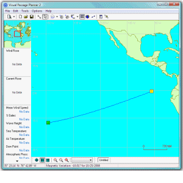
01.01.2009 18:06
Me on NOVA
Ch 5: The Rise of Phoenix - Quicktime
Landing successfully in the planet's arctic north in May 2008, Phoenix takes up the hunt for evidence of water. Before the frigid martian winter shuts it down, the robot geologist makes a stunning discovery.